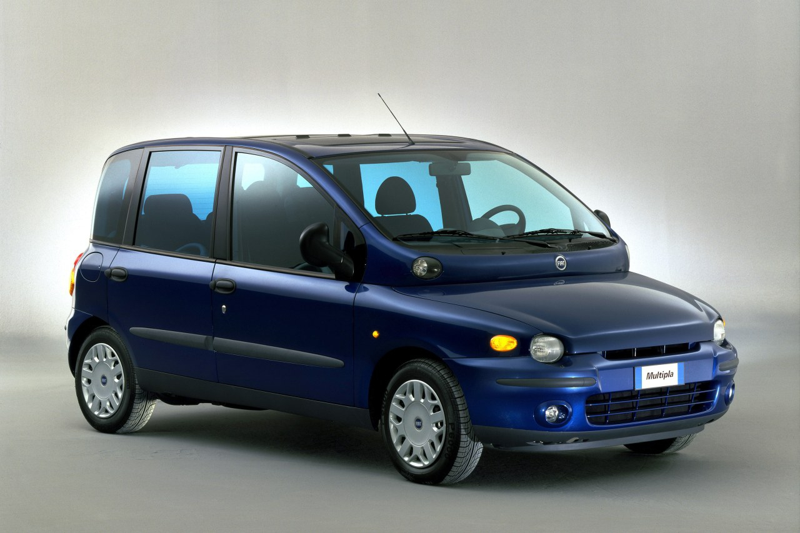

FIAT MULTIPLIA
Le Fiat Multipla est un monospace fabriqué par le constructeur italien Fiat de 1998 à 2010.

Le Fiat Multipla est un monospace fabriqué par le constructeur italien Fiat de 1998 à 2010.